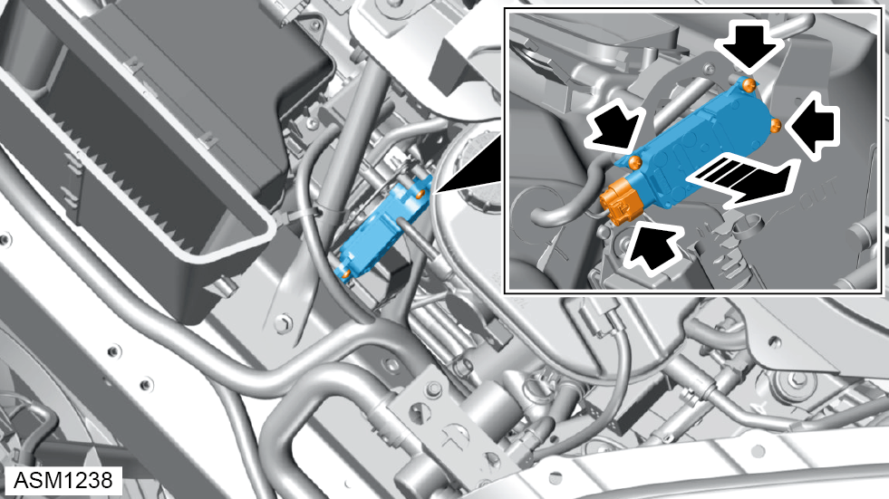

Actuator - Recirculation Flaps - LHD
Print
Operation Code: 18.01.09-02
Removal
- Remove radiator outlet duct left side. Refer to procedure.
- Remove radiator duct outlet right side.
NOTE: Procedure is the same as for left side component.
- Remove scrivets (x3) securing HVAC air inlet to vehicle.
- Remove HVAC air inlet.
- If fitted, remove water shield from HVAC unit. Refer to TSB-131-24007.

- Disconnect harness connector from left side actuator.
- Remove self tapping screws (x3) securing left side actuator to HVAC unit.
- Remove left side actuator.
Installation
- Installation is the reverse of removal procedure except for the following:
- After installation perform a diagnostic read and clear error memory using Lotus Insight tool.